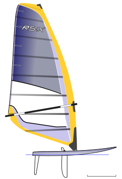
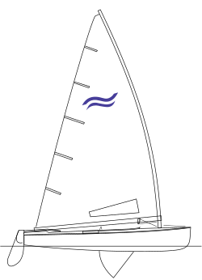
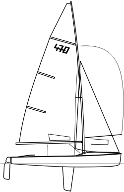
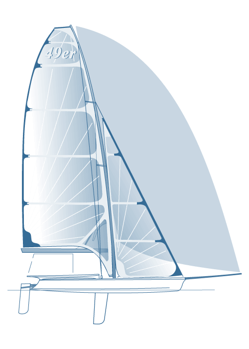
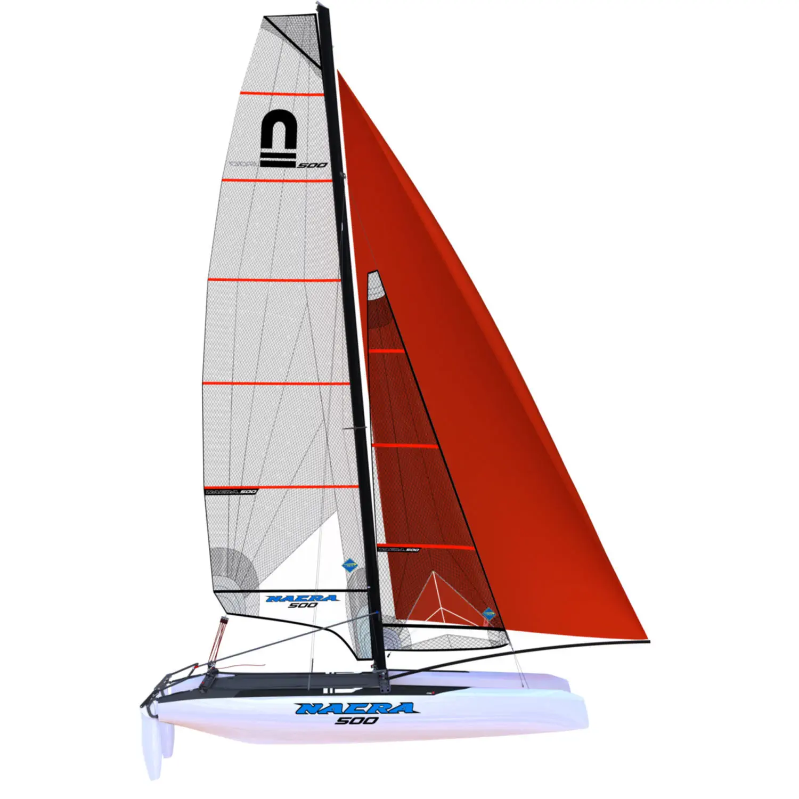

Categorías
1 Clases Olímpicas
En el mundo de la vela competitiva, al igual que en muchos deportes hay barias categorias en las que competir. A continuación explicaremos las olímpicas ja que con las mas conocidas:
Modalidad de Windsurf, a partir de 2008 sustutiyó a la clase mistral, categoria individual.

Cuenta con modalidad tanto femenina como masculina
Finalitat: infromar d’algun aspecte de manera objectiva
Justificació (3 exemples del text mínim):
- Respondre breument a la pregunta: què esposa? Resumir breument què es allò que proposa el text
- L’ús de verbs i pronoms en 3a persona
- L’ús de lèxic no valoratiu
- Oracions enunciatives
- Verbs en indicatiu
Yate, olímpico desde los Juegos Olímpicos de Helsinki en 1952, categoría individual

Cuenta únicamente con modalidad masculina
470 es clase olímpica desde 1976, categoría de parejas. El velero cuenta con tres velas.

Cuenta tanto con modalidad masculina y femenina
49er categoria de 2 tripulantes, el velero tiene 3 valas. La clase es olímpica desde los Juegos olímpicos de Sidney 2000.

Esta categoria cuenta con modalidad masculina y femenina.
Categoría de catamaran de 2 tripulantes, la embarcación cuenta con tres velas. Es olímpica desde los Juegos de Río en 2016

Únicamente cuenta con categoría mixta.
2 Otras Clases Conocidas
- Mistral
- Optimist
- Vaurien
- Snipe
- RS Feva
- RS Tera
- Raquero
- Ludic
- Cadete
- Dragon
- Europa
- Patin a vela
- L’Equipe
- Star
- Patín a vela